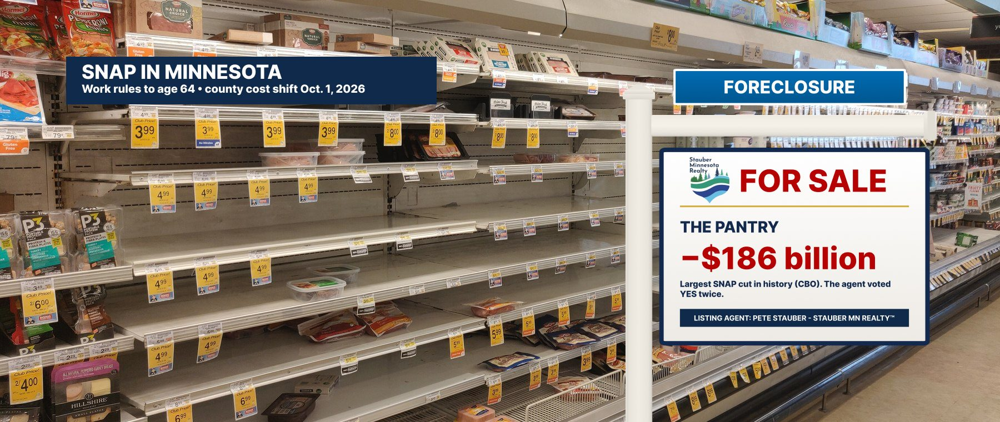

The Pantry — SNAP Food Assistance in Minnesota’s 8th District
Every grocery aisle from Moose Lake to Cook · St. Louis County: 16,000 recipients a month
The pantry, repriced
The One Big Beautiful Bill cut SNAP by about $186 billion over ten years, according to the Congressional Budget Office — the largest cut in the program’s history. The first House version passed 215–214; a single Republican switching sides would have sunk it. Listing agent Pete Stauber voted yes, and yes again on final passage (Roll Calls 145 & 190).
In Minnesota, the law expanded work requirements to adults up to age 64 (from 54) and to parents of children 14 and older, and repealed exemptions for veterans, people experiencing homelessness, and young adults leaving foster care. Minnesota officials estimated 12,700 people would be unable to meet the 80-hour monthly requirement and another 15,000 would lose benefits as exemptions ended — and that people cut off couldn’t reapply until 2029.
Before the law, 17 Minnesota counties and 9 Tribal Nations had waivers from the work rules because jobs were scarce. Under the new rules, only three Tribal Nations still qualify. In much of the 8th District, the work may not be there in January. The requirement is.
Then comes the invoice. On October 1, 2026, the federal share of SNAP administration drops from 50% to 25%, and Minnesota counties, which run the program, pick up the difference. Starting in fiscal 2028, the state must also cover part of the benefits. See The Special Assessment.
From $186 billion in Washington to $165 a month in Virginia, Minn.
Votes from the official House Clerk record.
| Date | Event | Details | Price |
|---|---|---|---|
| May 22, 2025 | Offer accepted | House passes the One Big Beautiful Bill, 215–214. Agent Stauber votes YEA.Roll Call 145 | 1-vote margin |
| July 3, 2025 | Closed | Final passage, 218–214; CBO scores the SNAP cut at about $186 billion. Agent Stauber votes YEA.Roll Call 190 | −$186B |
| Oct 1, 2025 | Amenity removed | SNAP-Ed nutrition education eliminated ($9.5M a year in Minnesota).MN DCYF | −$9.5M |
| Nov 2025 | Service interrupted | During the 43-day shutdown, November SNAP benefits are disrupted nationwide; the administration says it will pay 50% after courts intervene.CNBC | 50% |
| Feb 20, 2026 | Notice to vacate | Minnesota: 12,700 people unable to meet work rules plus 15,000 losing exemptions; April 1 deadline; no reapplying until 2029.MPR News | −27,700 |
| Oct 1, 2026 | County invoice | Federal share of SNAP administration falls to 25%; Minnesota loses ~$37M a year in reimbursements.MN DCYF | −$37M / yr |
| 2027 | Benefit trim | Thrifty Food Plan changes: roughly 440,000 Minnesotans receive about $5 less a month.MN DCYF | −$5 / mo |
| FY 2028 | State share | Minnesota begins paying part of SNAP benefits, estimated at ~$97M a year.MN DCYF | ~$97M / yr |
The new eligibility rules
Items the agent would prefer you skip
Seller’s Disclosure Statement
- Why do work requirements hit the 8th District harder?Because the waivers existed for places where jobs are scarce. Before the law, 17 Minnesota counties had them; now none do. Seasonal work in logging, tourism and construction doesn’t always add up to 80 documented hours every month.
- Are veterans still exempt?No. The law repealed the exemption for veterans, along with those for people experiencing homelessness and young adults aging out of foster care.
- Who pays to run the program now?Starting October 1, 2026, the state and counties pay 75% of administration. St. Louis County estimated the SNAP shifts alone equal a 2.93% levy increase.
- Was the vote close?The first House vote was 215–214. Every Republican who voted yes, including the agent, was the deciding vote.
Similar properties in this neighborhood

Public records cited in this listing
- House Clerk, Roll Call 145 (May 22, 2025): H.R. 1, 215-214; Stauber Yea
- House Clerk, Roll Call 190 (July 3, 2025): H.R. 1 final, 218-214; Stauber Yea
- Snopes, fact check: $186 billion SNAP cut (CBO)
- Minnesota DCYF, “Federal SNAP provisions in the 2025 reconciliation bill: Impacts on Minnesota”
- MPR News, “Thousands of Minnesotans to lose SNAP benefits under new eligibility rules” (Feb. 20, 2026)
- CNBC, “Trump admin will pay 50% of food stamp benefits in November amid shutdown” (Nov. 3, 2025)
- Association of Minnesota Counties, SNAP & Medicaid county impacts